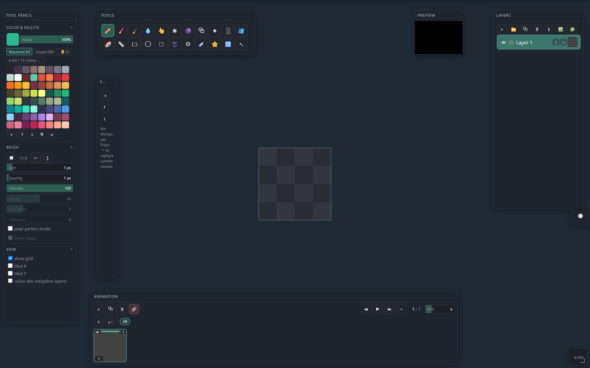

PixisEditor · Manual
How the editor works
An illustrated reference for tools, panels and gestures — with screenshots of the real interface, not abstract descriptions. The section is filled in gradually.
Interface map
The editor's main zones on first launch. Hover a number in the legend — it explains what lives in that area.

22 tools for painting, filling, shapes, selection and transform. Right-click an icon to quickly assign a hotkey.
Color and palette, active brush settings (size, intensity, dither pattern, etc.) — the context changes with the selected tool.
List of layers and groups, adjustments (🎚), effects (ƒx), visibility/lock, drag to reorder and opacity.
A live mirror of the document composite with its own zoom/pan — hides the grid, cursors and selection outlines.
Frame list, frame actions (named frame groups) and playback transport.
Saved stamps for reuse; can be dragged onto the canvas for a one-off application.
The document's working area. Pan — middle mouse button, zoom — right button (vertical drag) or wheel.
Sections
Documentation is built up piece by piece — icons and descriptions come from the real interface, not abstract mockups.
22 tools: brushes, fills, shapes, selection, utilities — with icon, hotkey and a canvas example.
🎨Color & PaletteSwatches, palettes, HSV picker, extract.
🗂️LayerssoonGroups, adjustments, outline/shadow effects.
🎞️AnimationsoonFrames, frame actions, transport.
🧭Canvas navigationsoonPan/zoom, split-view, tiled preview.
⌨️HotkeyssoonFull keyboard shortcut reference.